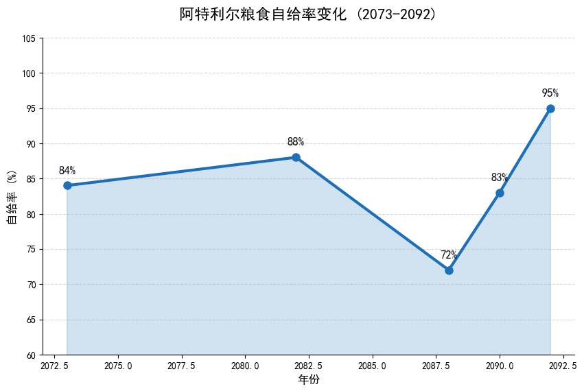
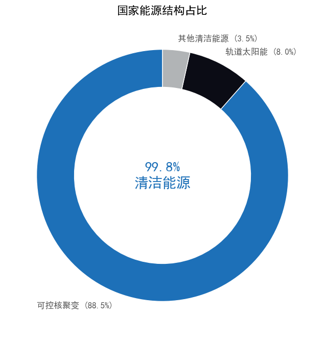
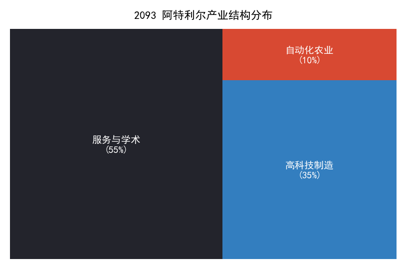
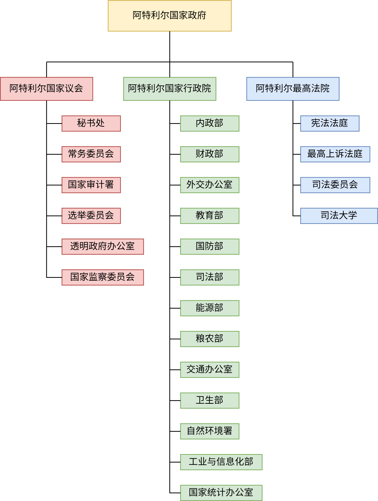

国家概况
阿特利尔联邦共和国横跨阿特利尔大陆，是由 24 个省份 与 5 个自治省 组成的民主联邦共和国。
我们致力于建立一个透明、法治与科技驱动的现代化社会。从西部的沃土平原到东部的工业海岸，多元文化在这里交融共生。
国家象征
旗帜上的三色，象征着阿特利尔狼族三大血脉的缔结与共荣，正是这份神圣的联合奠定了国家的基石。
徽章两侧环绕着安卡洛斯橄榄枝，寄托了国家对和平与庇佑的永恒祈愿；顶端高悬城市突击队徽记，以纪念其刺破长夜、引领国家走向光明的丰功伟绩。
访问联邦政府主页 (GOV.AT) →
我们的疆域与文明
阿特利尔坐落于沃尔行星，地理坐标横跨中西经 150° 至 0°，南纬 17° 至北纬 55°。
国土广袤，纵贯寒带、温带与热带，部分北部领土深入极圈之内。壮丽的冰川与繁茂的热带雨林在此共存。多种文明在我们的国土内欣欣向荣。
安特乌斯历法
- 日长： 28 小时/天
- 年长： 312 天/年
- 月制： 共 12 个月 (每月 26 天)

社会与经济
能源革命： 阿特利尔已全面告别化石燃料，成功实现可控核聚变发电全国覆盖。无限且清洁的能源不仅保障了国家能源安全，更驱动了从重工业到服务业的全面转型。
战后腾飞： 经济体系正以惊人的速度复苏，服务与科技产业成为新引擎。我们拥有庞大的大学集群与学术系统，被誉为“新时代学术巨人的摇篮”。
社会契约： 我们坚信每一个生命都值得被守护。联邦实行 12 年义务教育，建立覆盖全民的免费医疗服务与社会保障网。无论身处何地，阿特利尔公民都享有免于匮乏的自由。



政府架构
联邦遵循三权分立原则。国家议会代表人民行使立法权，内阁政府在行政团轮班行政的带领下行使行政权，最高法院独立行使司法权。 我们致力于确保国家的繁荣、安全与可持续发展，为所有阿特利尔公民提供透明、高效的行政服务。
治理体系概览

图示：阿特利尔联邦权力制衡与组织架构
历史进程 (2088-2092)
前民主政府因内部僵化解体，激进派兰德将军借机掌权，建立军事独裁政权。
国家陷入极权统治与对外战争。民生凋敝，但地下抵抗运动开始萌芽。
议会救国力量与城市突击队联合起义，推翻军政府。兰德政权倒台。
通过新宪法，阿特利尔联邦共和国正式成立。开启国家重建计划。
欢迎访问阿特利尔
阿特利尔的大门向世界敞开。无论您是旅行者、记者还是投资者，我们都诚挚邀请您见证这片土地的复兴。
申请电子签证 (e-Visa)